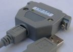
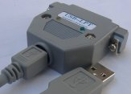
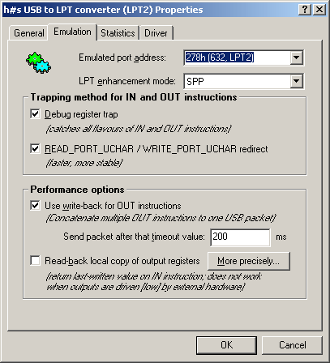

Keywords: USB, LPT, parallel, parallel port, printer port, converter, adaptor; programmer, ATmega, ISP, FPGA, CPLD, JTAG, direct port access emulation, IEEE 1284, IEEE1284
A reverse device called LPTzUSB for connecting a USB printer to a legacy parallel port is available since 2006.
This USB2LPT is not suitable for capturing parallel printer data. For this purpose, LptCap exists.
For ordering devices, please email me.
- Read this when you plan to purchase: Not recommended for new designs
- List of successfully tested programs
- To driver software
- USB2LPT is a multifunction device but not complete, missing JTAG due to documentation
- Frequently asked questions (FAQ)
- The Application Programmer Interface (API) for direct access to USB2LPT without INPOUT32.DLL or similar
A typical boring e-mail conversation … please do not ask the same again and again:
- > I have to control an old CCD camera with LTP [sic] bidirectional [sic, surely not] protocol. My application needs to communicate with the CCD console to start the image integration (pulsing and clearing the ccd array), stop the acquisition (saving the data in a HW buffer) and download them on PC.
- Expect image download times in hours, even with high-speed USB2LPT. If it would ever work. Possibly your hardware requires 5 V signaling. Then USB2LPT Low-Speed would help, then expect image download time in days.
- > All functions are quickly performed with old PC (with win 98 or XP) having a LPT port, but today we would like to use the new laptops or desktop computers to do this (but without the parallel port).
- Don't use cripplebooks. Only laptops having an ExpressCard slot are extensible enough.
- Avoid using closed-source hardware-accessing software, insist upon getting source.
Otherwise you are bound to old hardware and operating systems for the entire lifetime of your equipment. The same applies to Dongles.- Check whether your software relies to InpOut32.dll. If so, you can skip 4. and 5. and you are quite lucky.
- Check whether your software can handle non-standard port addresses.
- Check whether your software, especially its hardware access, runs under 64bit Windows (for the future).
- Buy any PCI or PCIexpress parallel port card.
Interception of port access instructions take place in the driver in privileged ring0 mode using hand-optimized assembly code, so this is as fast as possible. But the time for the I/O interception is small compared to the time needed for each IN instruction — a USB frame must be awaited, at least 125 µs. This may lead to 100x lengthening of time! (High-Speed USB2LPT)
I will hope that your software is not so much input-intensive. While processing time is lengthened, the processor yields to other running processes, so the processing load is kept low.
There are two known options to shorten awaiting of IN instructions:
It is stupid to use this converter only for a printer!
All other converters do this job correct! They are inexpensive too.
However, this converter contains a printer-compatible USB interface,
therefore, printing is possible without loss of performance,
see USB2LPT as multifunction device.
Programs that come with her own kernel driver will work too. This ist due to the “brute force” of a debug register trap.
Interferences with debuggers may occur. For program developers, this converter is relatively uninteresting.
Should I use this?⚓
There are some better options to get a parallel port if you need one. Read this list of available adapters and their advantages / disadvantages:
- PCMCIA:
- + True parallel port with ECP/EPP and expected speed
- + Base address same as built-in (378h, 278h) due to ISA roots
- + No driver necessary
- – Only available on very old or specialized laptops and notebooks
- ExpressCard (PCIe based):
- + True parallel port with ECP/EPP and expected speed
- – Base address offset to >1000h (your software must cope with this, or you need a patch or an address-shift driver)
But there are exceptions!- ± Driver sometimes necessary, depends on operating system version and model
- + Available on current laptops, notebooks
- – Not available on subnotebooks and netbooks
- – Expensive
- – Cumbersome due to the thick cable on the litte notebook
- – Likelihood of confusion with USB based ExpressCards, see below
- ExpressCard (USB based):
- → Electrically same as USB→ParallelPrinter adapter! See below
- USB→ParallelPrinter adapter:
- + Driverless PnP support for parallel printers, emulates a USB printer
- + USB available everywhere
- – Not a true parallel port, doesn't work with almost all programs, including scanners, relay cards, data acquisition etc., except my programs especially prepared for such adapters, e.g. DiscoLitez WinAmp plugin, AD9834 DDS generator interface
- – Even when resellers claim uniqueness, these are always the same (they lying)
- PCI or PCIe cards (for desktop computers):
- + True parallel port with ECP/EPP and expected speed
- – Base address offset to >1000h (your software must cope with this, or you need a patch or an address-shift driver)
- ± Driver sometimes necessary, depends on operating system version and model
- + Cheap and easy to handle
- This USB2LPT:
- + Emulated (virtualized) true parallel port with ECP/EPP
- – Reduced speed due to emulation and (mainly) USB bus transfer cycles (expect 10..100 times slower)
- + Base address same as built-in (378h, 278h)
- – Doesn't work with programs that expect a true PnP driver stack (scanners, ZIP drives) and software that disables port access redirection (dongles)
- + USB available everywhere
- – Driver necessary
- – Driver unstable, tricky, currently no driver for Linux
- + Smart and handy cabling with thin USB wire
- + open-source, multi-language, extensible, life-time support
 Low-Speed (cloning instructions) | USB2LPT Release 1.6
|
 High-Speed (cloning instructions with video) | USB2LPT Release 1.7
|
| Number 8 | In development: USB2LPT Release 1.8 — Eagle source
|
You may order devices by mailing to the address below.
Driver for Windows 98/Me/2k/XP/Vista/7/8/10
(, )
These drivers are not so much plug'n'play.
Up to three LPT port address rages are automatically captured.
Up to 9 devices may be connected due to naming scheme.
The driver and software is available in
14 languages.
Do not try this driver with any other hardware, this will simply not work and may confuse your operating system later!
The installer creates four extra pages for “Properties” in Device Manager.
Moreover, this .zip archive contains all source files for the driver,
the property sheet pages (14 languages), the help file (3 languages),
the microcontroller firmware for all USB2LPT revisions, and the utilities for handling the firmware,
all in its latest version.
The driver is certified.

Have a look to Device Manager! In the “Connections (COM & LPT)” tree, you will find a new parallel port. Its property dialog has four extra sheets:
"\\.\LPT1"
(or LPT2 if you already have one), and transfer IN/OUT data with
(see USB2LPT.A51, label "upv") via a single call of
DeviceIoControl.
Here is the full API documentation.
Via IOCTL code IOCTL_VLPT_AnchorDownload, you can inject additional firmware to speed-up your applications. Therefore, USB2LPT is a Pocket Development Kit for EZUSB AN2131/CY7C68013 too.
You can read the FAQ by following this link.
When you encounter problems using the device or driver, please include following information:
{kind=link}
{kind=link}
{kind=link}
{kind=link}
{kind=link}